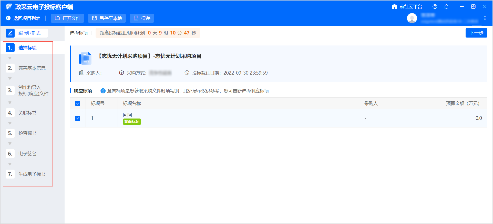
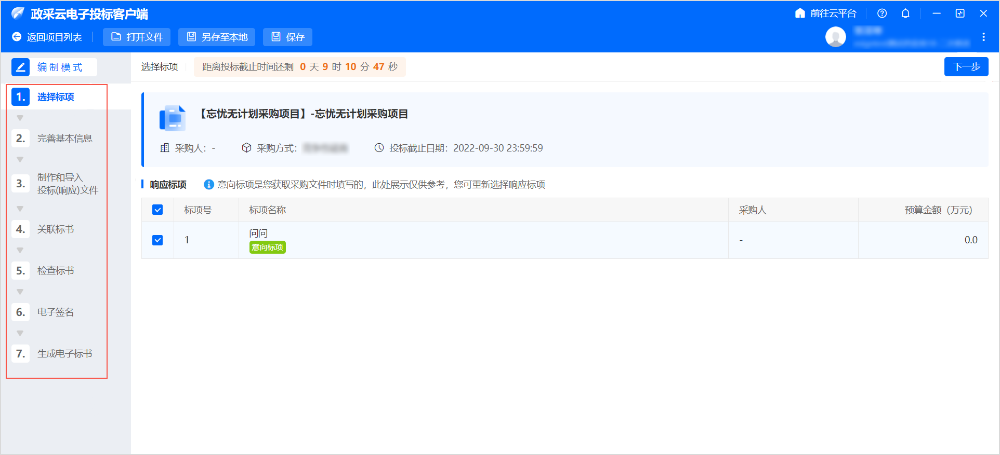

已获取采购文件。只有已获取采购文件的项目才会出现在项目列表。
供应商获取采购文件之后，在政采云投标客户端编制投标文件。
-
进入 政采云电子投标客户端 页面，点击 进行中项目 标签页，选择需要制作标书的项目；或者通过 搜索，搜索项目。

-
点击 编制。

- 将CA锁插入电脑。
-
在 选择CA 弹窗中，选择对应的CA服务商。（本文以浙江汇信CA为例）

进入 编制模式 页面，左侧可查看整个制作流程以及当前环节。

